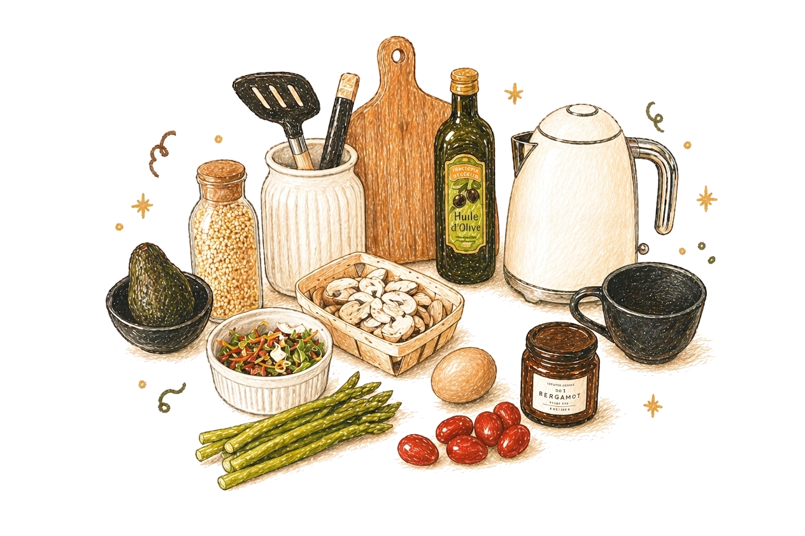

Hi, I'm Winnie.
It's nice to meet you.I wasn’t someone who grew up with a dream career. I found occupational therapy through a Google search, and started out in physical rehabilitation because I thought mental health was someone else’s dream.
But then I started seeing it everywhere. The people I loved most, whom I knew to be brilliant, were diagnosed with ADHD as adults. And at work, I kept meeting people with so much potential, but who struggled because they couldn’t find their footing. Sometimes it’s hard to find your footing when you can’t even feel the ground.
That pulled at me.
So I started learning and gaining experience in the mental health space. I combined it with everything I knew as an OT to build Everest Therapy, and now it certainly feels like my dream. Everyday I work alongside people finding their path, providing my support along the way, to get to the life they imagined.
Professional Development
I completed post-graduate continuing education in neurodivergent care and evidence-based best practices, cognitive-behavioural therapy (CBT), dialectical behaviour therapy (DBT), solutions-focused brief therapy (SFBT), and acceptance and commitment therapy (ACT).
While OTs do not provide these modalities as formal psychotherapy courses, my clinical practice is informed by these evidence-based frameworks. That means that the principles of these therapy tools are integrated into my clinical work and functional recommendations.
Education & Qualifications
- Master of Science in Occupational Therapy (MSc OT) at the University of Toronto
- Registered and Licensed by the College of Occupational Therapists of Ontario (COTO)
- 10 + years of clinical experience
- Member of the Canadian Association of Occupational Therapists (CAOT)
Outside of Therapy
When I'm not at work, I enjoy eating, home cooking and eating, and hiking.

Ready to Work Together?
Your initial consultation is completely free. Reach out and we will arrange a convenient time to chat about how I can support you.